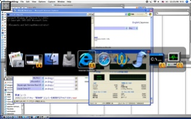
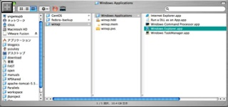
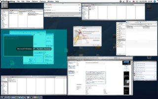

Wii ！！
なぜだか会社に Wii がやってきました。
コントローラはポインタデバイスになったり振動したり、音が出たりと驚きの工夫がつまっています。
Wii に興じるオトナ達の図
みんなでワイワイやるにはステキなマシンですね。
Pebble - JavaScript でトラックバックスパム対策
・Pebble - コメントスパム対策
・Pebble - コメントスパム対策 Round 2
・Pebble - トラックバックスパム対策
最近尋常じゃない量のトラックバックスパムが飛んでくるので対策を施しました。
コンセプトはコメントスパム対策と同じで、スパムを送るロボットが JavaScript を解釈しないだろうという仮定に基づいています。
1. action.properties を編集してトラックバック受け付け URL を変更
< addTrackBack=pebble.controller.action.AddTrackBackAction
> noSpamAddTrackBack=pebble.controller.action.AddTrackBackAction
2. blogEntry.jsp を編集してトラックバック受け付けURL を JavaScript で書き出すように変更
< <div class="small" style="text-align: center"><fmt:message key="trackback.url" /> <c:out value="${blog.url}" />addTrackBack.action?entry=<c:out value="${blogEntry.id}" /></div>
> <div class="small" style="text-align: center">
<fmt:message key="trackback.url" /><c:out value="${blog.url}" /><script>document.write('noSpamAddTrackBack');</script>.action?entry=<c:out value="${blogEntry.id}" />
</div>
コメントスパムは対策を施して以来なくなったのでこれも効果があるのではないでしょうか。
自動英文法チェックサイト - グラマーステーション GrammerStation.com
「とりあえず通じる」英語が書けるように、話せるようになると今度は文法が気になってきます。
私は附属高校の利で大学受験をしていないため、みっちりと英文法を勉強した覚えがありません。
Everyone は単数扱いだけど Each の場合はどうだっけ？とかとか結構基本的なところで悩んでしまいます。
で、ちょっと調べていたら便利なサイト、グラマーステーションをみつけました。
・グラマーステーション
・文法ガイド
基本的な英文法を説明するページとスペルチェッカ、文法チェッカがあります。
例えば "Each of them are running."と入力すると以下のように直してくれます。
で、訂正された "is" をクリックすると
「主語と動詞は一致しないといけません。主語の 'each' は単数形の動詞をとります。現在形では to be の 'is' の形を使ってください」
といった説明が表示されます。
いやーとても便利ですね。
文法チェックの結果は日本語でも表示できますが、ちょっと機械的な日本語が表示されるのと、説明の部分('is' をクリックして出てくる部分)は用意されていないみたいです。
文法の説明自体に難しい文法は使われていないので英語で使うのが良さそうです。
ちなみに文法チェッカを使うには登録が必要です。
「文法、スペルはいいからとにかく話して、書いて通じさせる」勢いはとても大事ですが、少しずつでも正しい文法で書けて、話せるようになるといいですね。
PLAYSTATION 3 さらにゲット！
知人に「見つけたら買っておいて！」と頼まれていたんですが、見事見つけてしまいました。
場所は先日 Wii を抽選で勝ち取った近所の GEO です。
まるで転売屋の様相
依頼主の勤務場所は自分の会社に非常に近いので、「明日持っていきましょうか？」と言ったら「ん、今日でいいよ。取りに行くから」と。
約7kg とかなり重いので、引き取りに来てくれるのは助かります。
リッジで対戦するのが待ち遠しいです:D
VMware for Mac Beta(Fusion) バージョン レビュー
VMWare の Mac ベータ版が約束通り、ギリギリ年内に出ました。
コードネームは Fusion だそうです。
・VMware Virtualization for Mac Beta Program
早速ダウンロード、インストールしてみました。
起動したとこ
新規VM の作成 - アシスタント1
ウィザードじゃなくてアシスタントと呼んでいるところが Mac 的で良いです。
アシスタント2
アシスタント3
CPUコアを複数割り当てることもできます。
これは Parallels ではまだ出来ませんね。
Windowsのインストーラ起動中
VMWareのインストーラのディスクイメージがマウントされたままだと CD-ROM ドライブの認識に失敗しました。
ベータ版にもかかわらずインターフェースはかなりMacらしくできていて好感がもてます。
インストール完了
VMWare Tools のインストール
VMWare Tools のインストール その２
VMWare Tools は仮想環境内とホストOSとの間に入って働きかけるソフトウェア郡です。
仮想環境に最適化されたビデオドライバで画面描画を早くしたり、マウスカーソルが仮想環境画面の端に行ったときにウィンドウの外に出るようにしたり、クリップボードを同期させたりといった役割を果たします。
クリップボードの同期 - 日本語もOk!
iSight は bootcamp のドライバをインストールすれば使えそう
・所感
ちょっと触った限りパフォーマンスはネイティブで Windows がブートしているかのようにサクサクで快適です。
クリップボードの同期や、マウスカーソルを移動させるだけでウィンドウから脱出させることができたりと基本的な使い勝手は十分。
Mac 向けのソフト出荷経験のない企業ということで心配していたインターフェースも良くできていて、Parallels よりもしっくりきます。
・コマンドキーのインテグレーション
Windows 環境内ではコマンドキーは Windows キーとして認識され、スタートメニューを出したり、Cmd+E で Explorer を出したりとできるんですが、コマンドキーの押下イベントがホストOSに渡されないため、そのままtabを押してもアプリケーションスイッチャーが起動しません。
なのでWindows環境に入ったら一旦マウスかトラックパッドを使わないとMac環境に戻ってこられません。
また、Parallels のように Cmd+a/x/c/v でクリップボードの操作ができません。
頻繁にWindows/Mac環境を行き来する場合には Parallels の方がスムースです。
・Coherence モードは？
期待はしてませんでしたが、そのような機能はありません。
Cmd+Return でフルスクリーンにはできます。
・VMWare と Parallels、どっちがいい？
まだベータ版なのでなんとも言えませんが、現時点ではMacとのシームレスな統合という点では Parallels の方が使い勝手が良いです。
一般的には VMWare の方が実績があるし、EMC 系列の企業ですからより体力がありそうです。
さらに単に Mac へ移植しただけでなくベータ版からいきなり見事に OS X のルック＆フィールにしっくり来るインターフェースを実現しているのは驚きです。
今後に期待！
Parallels Desktop for Mac Update Beta2 (Build 3094) レビュー
年末なっても Parallels の勢いは止まりません。
Parallels Desktop for Mac Update Beta2 (Build 3094)
新機能は以下の通り。
- USB 2.0 support
大抵の USB 2.0 デバイスが使えるそうです。
残念ながらWebカメラとかマイクといった、"isochronous devices" はまだだめだそうで。
- Full-feature virtual CD/DVD drive
Windows から直接 CD/DVD を焼いたり、見たりできる。
- Improved Coherence mode
Windows アプリケーションをDock に配置して、Dock アイコンのクリックで起動可能。
Cmd+タブ で、Macアプリと一緒にWindows アプリも切り換えられる。
コマンドプロンプトが見える。
#以前のビルドではコマンドプロンプトをウィンドウとして認識できないのか、Coherenceモードではうまく表示できませんでした
大人気のためかエラー発生しまくりでなかなかダウンロードできませんでした。
１２時間ほどたってようやくダウンロード成功。
新しい Coherence モードはこんな↓感じ

WindowsとMac混在のアプリケーションスイッチャ
Alt+Tabじゃなくて、MacネイティブのCmd+TabでWindowsのアプリケーションとMacのアプリケーションをシームレスに切り換えられます。
仕組みは Virtual PC がやっていたのと同じです。
アプリケーションを起動する度にMac 上のアプリケーションとして認識させるためのスタブが OS の仮想イメージが配置されている場所に生成されます。

Mac 側のスタブアプリケーション
もちろんDockアイコンを右クリックして「Dockに保存」とすれば次回 Dock からアプリケーションを起動させることもできます。
面白いことに Parallels が起動していなくてもこのアプリケーションを起動すると Parallels 起動 -> Windows 内でアプリケーション起動、までやってくれます。
また、このアプリケーションアイコンはウインドウが存在する場合だけ表示するようです。CPU使用率とか確認するために、普段タスクマネージャは起動しっぱなしで「最小化時に隠す」設定をしているんですが、ウィンドウが出ているときだけ Dock に表示されるので直感的です。
Windows アプリケーション自体は今までと同じように Mac 的には一枚のウィンドウに描画されているため、Exposéでは Windows 全体を丸々選択することしかできません。

Exposé で Windows 全体を選択している様子
新しい Coherence モードで、ようやく「VirtualPC ではできたのに」的なはがゆさがなくなり、機能の上で完全に超えたと言えるのではないでしょうか。
あとは DirectX 対応と内蔵iSight対応が望まれるところです。
{kind=link}
{kind=link}
{kind=link}
耳かきをするのは利き手？両手？
最近奥さんが耳かきをしているのを見て驚きました。
左の耳を掻くのに右手を使っているんです。
自分はそれぞれの耳に近い手で、左耳は左手で、右耳は右手で掻いてます。
左ききなので、右利き用に出来ている世の中に合わせて、右利きの人の左手よりは自由に右手が使いこなせるからかもしれません。
試しに左手で右耳を掻こうとしたら耳かきがうまい角度で入らずとっても難しいです！
慣れないせいもあるでしょうが。
アナタは利き手と反対側の耳、どちらで掻きますか？
WebLogic Server 10.0 Tech Preview インストール
とりあえずインストールだけしてみました。
初めて触ったのが WebLogic Server 5.1 ですから、5.1, 6.0, 6.1, 7.0, 8.1, 9.x, 10.0 とメジャーバージョンで７つ目になります。
インストーラはいままでのバージョンと比べて特に代わり映えはないです。
インストーラ展開中
ウィザードの簡単な説明
運用しちゃだめです、パフォーマンス測定結果を断りなしに公表しちゃだめです等々
インストールディレクトリの設定
デフォルトでは C:¥bea ですが、バージョン名とか付けておくとわかりやすいでしょう。
とりあえず Complete を選択しておいて問題ないでしょう
Mercury profiling tools ってどんなものでしょうね？使ったことありません
最近は JRockit 自体にプロファイラが内蔵されているのでとりあえずチェックはずしておきました。
同じ BEA ホームに複数の製品をインストールするのでなければそのままで Ok。
複数インストールする場合は重複しないように。
お好きな方を。
インストール中
インストール完了
iTunes Store - 数独登場
iTunes 7 リリースと同時に登場した iPod のゲームですが、久しぶりに新作ゲームがリリースされました。
数独とソリティアです。
数独は順当なチョイスですね。ちょっとハマったことありました。
ソリティアは簡単なやつが最初からiPod に内蔵されてるのでちょっと微妙。
ルールが１０種類くらい選べて、ビジュアルエフェクトが豪華になっているようです。
プレビューを見るだけでもちょっと楽しいです。
・Sudoku
・Royal Solitaire
WebLogic Server 10.0 Tech Preview
Java EE 5 対応(予定)の WLS 10.0 Tech Preview がリリース。
・WebLogic Server 10.0 Tech Preview download
・BEA WebLogic Server 10.0 Documentation
TOEIC 結果通知
11月に受けたTOEICの結果を発送したよ、とメールが届きました。
同時に Web で確認できるようになってます。便利。
点数は４年半前の 705点から 880 点へと大幅に向上！
"TOEIC テストについて - スコアの表す能力" によると 860 点以上は 「Non-Nativeとして十分なコミュニケーションができる」能力だそうです。
しかし、実感としてはペラペラにはまだまだ遠いです。
800点も取れば流暢に話せるものと思っていましたが。
仕事でも全く不自由なく使いこなせるレベルは 990 点よりも上にあるんでしょうね。精進精進。
Wii ゲット！
先日 PlayStation 3 を買ったばかりですが、同じく入手困難な Wii も抽選でゲット！
なんだか最近ツいてます。
プレステ3 と Wii
↑楽天市場:クリスマスセールで期間限定(2006年12月25日)１台限定10,000円のWii
昨日近所の GEO をチェックしたところ「明日朝９台入荷予定、希望者多数の場合は抽選」とあったので並びました。
自分の前に並んでいたおばちゃんは、何やらざわついている様子に、「あら、これナニ？皆さんゲームで並んでるの？」と。
韓国ドラマのビデオをアサイチで返しにきて、何となく並んでいたみたいです。
「人気ゲーム機で品薄なんですよー」「あぁ、あの体動かしてあそぶやつねー」とか話してたら「じゃぁ当たったら譲ってあげるよ！」と一緒に並んでくれることに！
朝 GEO 前に並ぶ人々
おばちゃん「ウチの子どもも欲しいのかしら？寝てるけどー」
自分「任天堂の社員はこれとDSのヒットでボーナスが140万くらいらしいですよー」
おばちゃん「んじゃこれも値下げしてくれればいのにー(笑)」
などと雑談してました。並んでるときに話相手がいると楽しいですね。
結局並んでいたのは25人で、おばちゃんは外れてしまいましたが自分は見事当選しました。
おばちゃんありがとう！
Wii 付属品一覧。
ゼルダとかめちゃめちゃやってみたいんですが、この Wii、人に頼まれたもので開封できません。
今オークションで売れば１万円くらい利益が・・・なんて考えてしまいますが、忘年会の景品になるようです。
盛り上がってください！
自分用はリッジレーサーをクリアしたころにまた探してみようかと思います。
| 楽天市場:ゼルダの伝説 トワイライトプリンセス | 楽天市場:Wii本体 |
BEAが業界発の先手必勝サポートサービス "Guardian Support Service" を発表
BEA が新しいサポートサービス、"Guardian Support Service" を発表しました。
・Press Release BEA Systems' Guardian Pioneers the Industry's First and Only Pre-emptive Support
・BEA Guardian™ A New Wave of Customer Support
Sigunature Patterns というパターンセットを使って、システムのパフォーマンスダウンや、設定の不備、既知のバグを洗い出して潜在的な問題箇所を事前に検出するというものです。
ちょっと動かしただけでは一見問題がないシステムでも負荷がかかったり、特定の条件だけで発生するバグとかがあったりすると厄介ですから、ミッションクリティカルなシステムではこれから必須のサービスになるのではないでしょうか。
この "Guardian"、何を隠そう私が名付け親です！
写真はBEA在勤時に開催されたネーミングコンテストの商品、iPod nano(4GB) 。
ようやく日の目を見たようで感慨深いモノがあります。
ちなみに北米では 2007年1月 サービス開始。
Tiger への X11 のインストール
Linux アプリケーションの GUI インストーラを触る機会があるので、X11 for Mac OS X を入れていました。
インストーラはどうやら Web には転がっていないみたいで、MacBook Pro に付属のインストーラを使いました。
MacBook Pro OS X Install Disc 1 の /System/Installation/Packages/X11User.pkg にありました。
X11 のインストーラ
X11User.pkg を起動すると、いつものインストーラの画面。何も迷うことなくインストールできます。
インストール後はソフトウェアアップデートで最新版にしました。
インストール、アップデートが完了したらいよいよ起動。
アプリケーション/ユーティリティ/X11.app をダブルクリックすれば Ok。
xterm というターミナルが起動したら、
$ ssh -X username@hostname
とすれば X Window System の情報を双方向に転送するモードで ssh 接続が確立します。
で、xeyes とうつとマウスカーソルを追いかける目玉が登場します。
ローカルのマウスの移動情報がサーバ側に伝わって、サーバからは GUI の表示情報が帰ってくることが分かりますね。
xterm と xeyes
リモートのログファイルを監視したいときは侍が使えます。
$ wget http://yusuke.homeip.net/samurai/samurai.jar
$ java -jar samurai.jar
しかし、起動半ばで X11 もろとも落ちてしまいました。
関連エントリ:
・Leopard インストール！ - X11 は標準搭載
VMWare Player で仮想環境 - その2 QEMU で VMWare Player のディスクを作成する
1.VMWare Player に OS を新規インストール
2. QEMU で VMWare Player のディスクを作成する
Browser Appliance をベースにして CentOS をインストールしましたが、仮想ディスクサイズが 10GB しかないのであっという間にディスクが足りなくなってしまいました。
しかし、VMWare Player は Player であって、仮想ディスクを作成する機能はありません。
QEMU というエミュレータ環境をつかうと仮想ディスクを作成できると聞いてやってみました。
やりかたは簡単。QEMUをダウンロードして、qemu-img.exe というユーティリティを使うだけ。
具体的には
> qemu-img.exe create -f vmdk 仮想ディスクファイル名.vmdk 仮想ディスク容量
といった感じ。
>qemu-img.exe create -f vmdk centos.vmdk 30G
Formating 'centos.vmdk', fmt=vmdk, size=31457280 kB
C:>dir *.vmdk
ドライブ C のボリューム ラベルがありません。
ボリューム シリアル番号は 5019-C42E です
C: のディレクトリ
2006/12/13 11:45 3,997,696 centos.vmdk
1 個のファイル 3,997,696 バイト
0 個のディレクトリ 60,680,519,680 バイトの空き領域
オプションの -f vmdk というのが肝心で、このオプションをつけないといきなり指定したサイズのファイルができてしまいます。
実際に使い切るかどうか分からない仮想環境にまるまるディスクを消費してしまうのはもったいないですね。
ただ、拡張可能な仮想ディスクは断片化しやすそうなので実ハードディスクに余裕があって、パフォーマンスを重視する場合はオプションを外しても良いかもしれません。
ディスクが作成できたら、あとは今まで使っていたイメージと差し替えれば普通に好きな OS をインストールできます。
GWT がオープンソースに
Google の AJAX フレームワーク、GWT がオープンソースになりました。
・GWT 1.3 Release Candidate is 100% Open Source
http://googlewebtoolkit.blogspot.com/2006/12/gwt-13-release-candidate-is-100-open_12.html
最近 AJAX のフレームワークが乱立しているのでそろそろ淘汰されてきてほしいところです。
GWT はまだ使ったことはないですが、丸々 Java で Web アプリケーションを開発できるので Java 使いには一番効率が良いプラットフォームではないでしょうか。
・GWT 1.3 RC1
http://code.google.com/webtoolkit/download.html
Tikal Bugzilla
Bugzilla ベースの BTS で、いくつか機能が追加されているみたいです。
http://tikal.sourceforge.net/tikal-bugzilla/index.html
オープンソースで商売をしている Tikal という会社が出しています。
Bugzilla は「うごきゃいいでしょ？」的に、見かけをかなり割り切っている感じがしますが、これはルック＆フィールがいい具合に改善されています。
しかし、Bugzilla は Bugzilla。CGI/Perl ベースなのは個人的に残念。
Sun Java SE6 リリース
未だ Tiger のアノテーションすら理解していないんですが、Mustang こと Java SE 6 がリリースされました。
・Java SE 6
http://java.sun.com/javase/6/
プラットフォームは Windows x86/x64, Linux x86/x64,Solaris SPARC/x86/x64 。
Apple は OS X 版を Leopard で標準搭載といったところでしょうか？
先日ベータ版で NetBeans を動かしたところ画面表示に乱れがあったので、直ってると良いんですが。
ベータ版を確認した限り、Mustang ではスレッドダンプのフォーマットが若干変わっていました。
侍はまだ対応していません。
今年中には対応したいと思います。
VMWare Player で仮想環境 - その1 VMWare Player に OS を新規インストール
1. VMWare Player に OS を新規インストール
2. QEMU で VMWare Player のディスクを作成する
Windows 版の VMPWare Player に CentOS をインストールしました。
あちこちの情報を見てなんとなくできたのでメモしておきます。
1. Player のダウンロード / インストール
http://www.vmware.com/ja/products/player/
2. Browser Appliance をダウンロード
Bworser Appliance は Ubuntu Linux が最初からインストールされている仮想マシンです。
VMWare Player は新規の VM 作成ができないのでこれをベースにします。
Browser Appliance
3. iso イメージの認識
今回は RedHat Enterprise Linux 互換の OS が欲しかったので CentOS 3.8 の iso イメージを用意しました。
VM の設定情報は Bworser-Appliance.vmx に記載されていて、イメージを認識させるにはこのファイル中の IDE Storage というセクションを以下のように書き換えます。
ide1:0.fileName = "C:\CentOS-3.8-i386-binDVD.iso"
#ide1:0.deviceType = "cdrom-raw"
ide1:0.deviceType = "cdrom-image"
ide1:0.startConnected = "TRUE"
ide1:0.autodetect = "TRUE"
deviceType が "cdrom-raw" だと実際の光学ドライブを、"cdrom-image" だと fileName に指定した iso イメージを認識してくれるみたいです。
4. ネットワーク構成の変更
デフォルトではネットワークカードは vmxnet という VMWare 特有の（？）NIC が見えるみたいです。
以下のように書き換えるとより一般的なネットワークカードとして認識されるみたい。
#ethernet0.virtualDev = "vmxnet"
ethernet0.virtualDev = "e1000"
5. BIOS を設定して DVD イメージから起動
VMWare Player を起動した直後に F2 キーを押すと BIOS の設定画面がでます。
デフォルトではハードディスクを一番優先して起動しちゃうので、ハードディスクより CD ドライブを優先させるように設定。
起動シーケンスを続行すると ISO イメージからブートします。
6. あとは普通にインストールするだけ。
7. ホスト名の変更
諸事情で自分のホスト名がlocalhost.localdomain とか、DHCP サーバにもらった dhcp*** とかに割り当てられるのが嫌だったので、変えました。
DNS サーバを立てなくても /etc/hosts と /etc/sysconfig/network を書き換えれば良いようです。
もちろん VM の外からは名前解決できませんが。
# Do not remove the following line, or various programs
# that require network functionality will fail.
127.0.0.1 localhost centos-vmware
NETWORKING=yes
HOSTNAME=centos-vmware
日経コンピュータ 試読終了
先日申し込んだ日経コンピュータの試読期間が終了する旨のハガキが届きました。
--------------
試読終了連絡期限:2006年12月15日
試読終了号:2007年1月8日号
試読残冊数:2冊
本購読開始号:2007年1月22日号
--------------
やはり試読期間が過ぎると自動的に有料購読に突入する仕組みのようです。
ただ、試読終了の手続きはフリーダイヤルでもWebでもできるようになっていて親切です。
ちょっと読む時間がとれなかったでとりあえず試読終了のお願いをしておきました。
PLAYSTATION Store ダウン！
PlayStation Store にアクセスしたら落ちてました。
エラー画面
ブラウザを終了するしかない
再度試すと接続に失敗(Connection Refused)
スタックトレースを見ると Struts を使っていることが分かります。
根本原因には ResourceNotFoundException: Unable to find resource '/ps3/error.vm' とあるります。
Velocity を使っていますね。
何か問題が発生したか、計画停止中に Sorry Page を表示しようとしたんだけどもエラー画面のテンプレートを配置し忘れて結局無骨なエラーメッセージがでてしまったという経緯が読み取れます。
もしかすると根本的な問題が FD の枯渇による Too many open files なので、 error.vm は配置されているんだけれどもエラー画面をだそうとするも、FD 枯渇中で error.vm を開けない、ということかもしれません。
ちなみに１０分ほどで復旧しました。
担当者様、お疲れさまです。
追記(12/24):
グランツーリスモのダウンロード開始でまたつながりにくい状態ですね。
Mighty Mouse for Intel Mac リリース
ハードウェアじゃなくて、Mac OSX のマウスカーソルをカスタマイズするソフトです。
ちょっと前になりますが Interl Mac 用のがでました。
・At Long Last, Intel Cursor Customization
同じ Unsanity 社のソフトでは WindowShadeX も持っています。
OS 9 まであったウィンドウシェード機能を Mac でも実現するソフトです。
・Windows Shade X
昔からの Mac ユーザにはオススメ。
Windows のパス表記(UNC)を Mac OS X フレンドリーにする JavaScript
Windows がのさばっている職場だとしばしば ¥¥host¥path¥ といった形の UNC と呼ばれる形式のパスを目にします。
Mac OS X でアクセスするには Finder で Cmd + k を押下して、パスを smb://host/path という形に読み変えて入力すればアクセスできます。
たいした手間ではないんですが、何度もやっていると面倒なので自動的に変換する JavaScript を組んでみました。
Original: に UNC パス表記を書くと Converted: に Finder で解釈できる URL が表示されます。
Virtual PC に近づいた？ - Prallels Desktop build 3036 beta リリース
Parallels Desktop の最新ベータ版がでました。
・Parallels Desktop for Mac build 3036 Beta is available for download.
・「Parallels Desktop for Mac」、大幅な機能強化と共に「build 3036 Beta」配布開始
なかなか新機能が盛りだくさんです。Parallels はそこそこイイ感じに動くものの、インターフェースや細かい使い勝手の点で今一歩 Virtual PC にかなわないところがありましたが、だいぶ挽回、一部で追い越した感じです。
・Resizable Main Window
Parallels Desktop のウィンドウをリサイズすると中の OS の画面サイズがフィットしてくれるもの。
Virtual PC にはありましたね。
・Drag and Drop files and folders between Windows and Mac
Mac と Windows 間をDnDでファイルのやりとりができるというもの。
これも VPC にはある機能。
・Read/Write BootCamp partition / Boot from BootCamp partition
BootCamp のパーティションを使って Parallels Desktop の VM が起動できるようになった。
BootCamp ユーザには便利かも？
・Parallels Transporter
Virtual PC や VM Ware、別の実コンピュータで動いている実際の PC 環境から引っ越しをするツール。
これでようやく Virtual PC からの移行ができますね。
・Improved graphic performance
50% ほどグラフィックスのパフォーマンスが向上したそうです。
DirectX 対応はまだ。
・Enhanced Shared Networking Mode
Cisco VPN など複雑なネットワークアプリケーションとの相性がよくなったようです。
・Transparent mapping of Command-AZXCV key combinations
Mac的なショートカットでクリップボード操作ができる！
Command キーは従来通り Windows キーにマッピングされていますが Cmd+C/V/X といった組み合わせのときはクリップボード操作として検出されるようです。
できればParallels の Edit メニューがフラッシュして、コピー操作が行われたことが視覚的にフィードバックされるといいんですが。
・Coherency
Windows のアプリケーションを Mac 上でうごいているかのように見せるもの。
Wine 的に Parallels が動くわけではなく、Windows のデスクトップ部分だけが100% 透けて Mac アプリが見える機能です。
新しい Parallels Tools をインストールして、[View > Coherence] で有効になります。
Mac 的には大きな部分透過ウィンドウが表示されている扱いみたいで、残念ながら Windows アプリケーションの各ウインドウは影のないノッペリしたものになります。
デスクトップは透過しているだけでなく、ちゃんとマウスクリックは後ろに表示されている Mac アプリに到達します。
ただし、Win アプリをクリックするとそのウィンドウだけでなく、全 Win アプリ＆タスクバーが最前面に表示されます。
コンセプト的には非常に面白く、間違って Mac の Finder から Windows のアプリケーションに DnD でファイルを渡そうとしてしまったりします。(アプリには渡されず、デスクトップにコピーされるだけ)
Coherence でデスクトップが透過している様子。
Windows のアプリケーションが Mac 的にそれぞれ別のウィンドウ扱いになって、タスクマネージャじゃなくて Dock にもスタートボタンやアプリケーションアイコンが表示されたら良いですね。Virtual PC で近いことを実現していましたが。